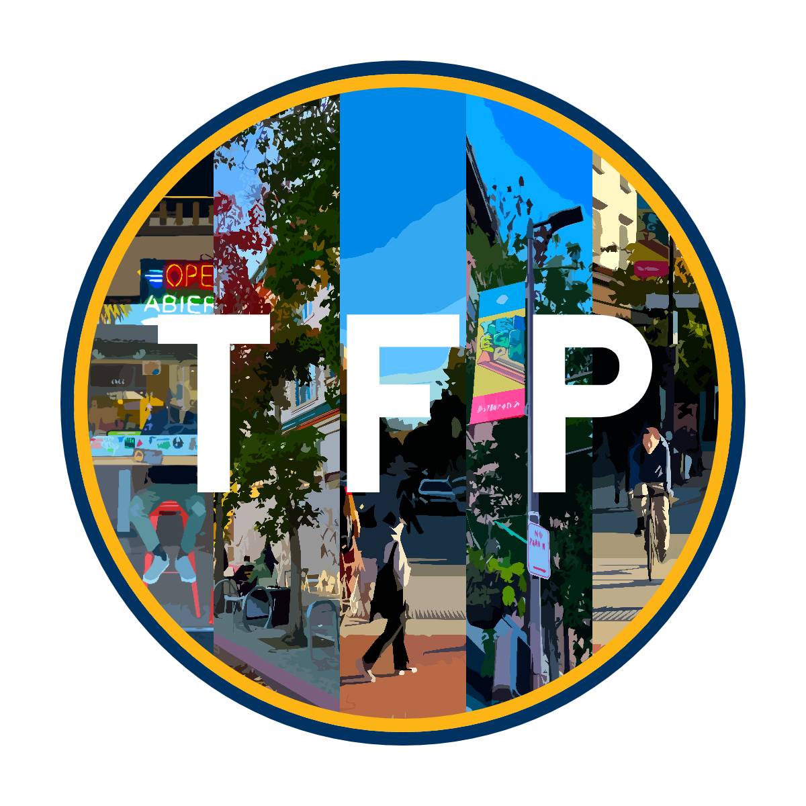
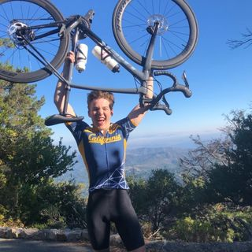

Timeline
A summarized chronology of my career thus far
Fall 2022
Research Associate and Developer
Admitted into Political Computer Science @ Berkeley, a project-based organization that utilizes computer science to address political problems and create tools that help everyday people navigate complex political topics.
Summer 2022
Began Double Major
Explored my passion for Computer Science, ultimately adding it as a second major
Fall 2021
Research Associate
Joined the SDG Undergraduate Research Group, a self-directed undergraduate think tank that focuses on improving sustainibility across all societal endeavors

Fall 2021
Director of Political Strategy and Media
Joined and helped create TelegraphForPeople, a student-ran transit and urban design advocacy group that seeks the redesign of Berkeley's college neighborhoods to be bike and pedestrian centric instead of an urban hellscape
Fall 2020
Began Undergraduate Studies at UC Berkeley
Enrolled as a Political Science Major
Portfolio
Some of the projects I'm most proud of
Recitivism Machine Learning Model
Machine learning encourages Recitivism models to associate race with risk due to external, historical patterns of overpolicing, oversentencing, and overprofiling. Developed in Python and fed 2.6 million entries, this model escapes those biases, offering a better path.
2D Worldbuilding Engine
An interactive 2D tile-based world engine that pseudorandomly generates interative worlds.
The engine supports persistence, dynamic lighting, scoring, customizable avatars, and a dynamic HUD,
creating an immersive and fully explorable world! Built in Java.
Scheme Interpreter
An interpreter that parses and evaluates user-generated Scheme code
by tokenizing and parsing Scheme inputs defined by Scheme syntax rules.
Assigned to ascertain understanding of Scheme, Python, and interpreters,
I moved beyond the course project and implemented tail-recursion optimization with Python.

Amped Discord Bot
All your favorite Discord music bots are dead. Amped revives the deprecated features of Rhythm and Groovy to allow users to bypass the ad-laden alternatives and listen to music directly inside their voice channels! Uses Python to serve the Discord API for interface.
2048
Thanks for reading this far! 2048, but in Java. Does it serve a larger purpose? No. But I love this game.
This Website!
You're looking at it! A hard-coded vanity monument built to teach myself HTML, CSS, and JavaScript, as well as chronicle my professional development!
[Click to Expand]
Extracirriculars
Life Outside Academics
Contact

Max Vink
Feel free to get in touch